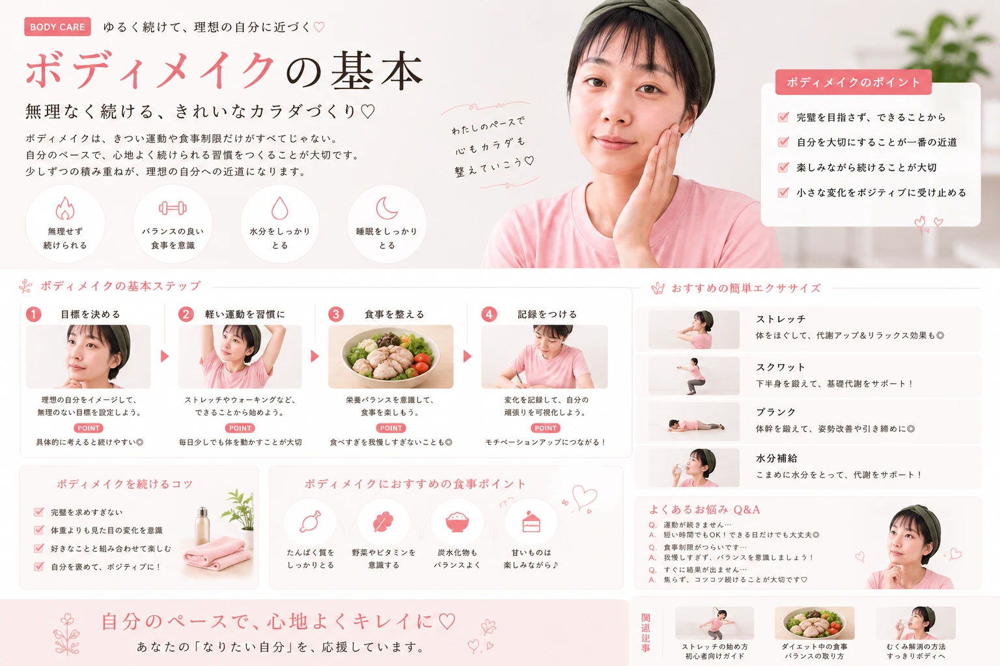

ボディメイクは、 いきなり激しい運動をする必要はありません。
大切なのは、 自分の体に合った習慣を 少しずつ続けること。
運動だけでなく、 食事・姿勢・睡眠なども含めて 全体的に整えていきましょう。

キレイは、日常の積み重ね。

運動・食事・姿勢・生活習慣。 頑張りすぎず続けやすい ボディメイクの基本を紹介します。
ボディメイクは、 いきなり激しい運動をする必要はありません。
大切なのは、 自分の体に合った習慣を 少しずつ続けること。
運動だけでなく、 食事・姿勢・睡眠なども含めて 全体的に整えていきましょう。
「痩せたい」だけではなく、 どんなスタイルを目指したいのかを 具体的に考えてみましょう。
最初から毎日長時間運動すると、 続けることが難しくなる場合があります。
まずはウォーキングや 軽い筋トレなど、 自分が続けやすい運動から 始めましょう。
「少しでも動く」を 習慣にすることからスタート。
特定の場所だけを集中的に鍛えるより、 全身をバランスよく動かすことを 意識しましょう。
スクワットなど、 下半身を使う運動。
姿勢を意識しながら 体幹を使う。
背中や腕なども 無理なく動かす。
ボディラインをきれいに見せたいなら、 普段の姿勢もチェックしてみましょう。
ボディメイク中でも、 食事を極端に減らすのではなく、 バランスを意識することが大切です。
食事制限を極端にしすぎず、 続けられる食生活を目指しましょう。
運動や食事だけに集中せず、 休む時間もしっかり確保しましょう。
毎日の生活リズムを整えることも、 長くボディメイクを続けるための 大切なポイントです。
水分補給をして、 軽く体を動かす。
姿勢を意識し、 できるだけ歩く。
軽いストレッチをして 体を休ませる。
ボディメイクは短期間だけ頑張るより、 無理なく続けられる習慣を 作ることが大切です。
「毎日完璧にやる」よりも、 「少しずつ続ける」ことを 意識してみましょう。